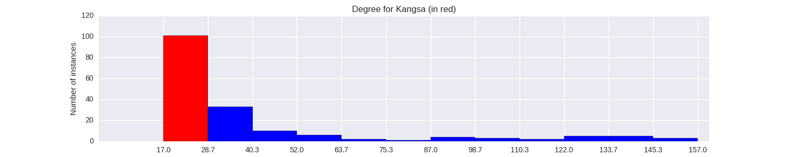

Quantiative Wayang Dictionary
Kangsa
Terms of address: Prabu
Type: Human
Origin: India
Notes on the Sanskrit version: Kamsa is a brother of Devaki. After Devaki marries Vasudeva, the /aakashavani/ (divine prophecy from the skies) announces that Kamsa will die at the hands of her eight child. Upon hearing this, Kamsa imprisons both Devaki and Vasudewa and kills every child born to them. He is, however unsuccessful in killing the 7th and 8th child of the couple, Krishna, who kills Kamsa, proving the prophecy correct.
Alternative names: Jaka_Maruta, Kangsadewa
Description in the Javanese version: Son Maerah and Gorawangsa, who was disguised as Basudewa. His features demonstrate his mixed ancestry, both human and ogre. As an adult he was acknowleded by Basudewa, but he plotted with [Suratimantra] to take over the [Mandura] kingdom. When Basudewa's children were little, they were sent to Widarakanda, to be looked after by [Antagopa] and [Nya_Sagopi], out of fear that Kangsa might want to harm them. Kangsa is eventually killed by Kakrasana(Baladewa) and Narayana(Kresna).
Found in the follwing lakon (stories):
Family relationships
Mother: Maerah
Father: Gorawangsa
Consorts: Asti, Prapti
More information
Sources: Ensiklopedi Wayang Purwa, pp. 276-278; Mengenal Gambar Tokoh Wayang Purwa, p. 141; Sejarah Wayang Purwa, pp. 153-155; Ensiklopedi Wayang Indonesia, pp. 212-218 (Vol. V); Rupa dan Karakter Wayang Purwa, pp. 796-797
Network measurements for Kangsa
| Measurement | Value | |
|---|---|---|
| Degree | 20.0 |  |
| Weighted Degree | 26.0 |  |
| Betweeness Centrality | 0.0 |  |
| Eigenvector Centrality | 0.16124275849 |  |
{kind=link}
Characters in the same adegan as Kangsa
| Character | Link weight |
|---|---|
| Character | Link weight |